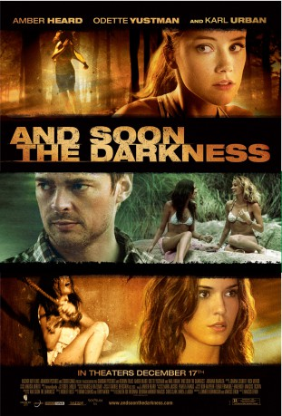

IMDB-Wertung: 5.2 / 10
IMDB-Wertung: 5.2 / 10  Metascore:
Metascore: 
When two American girls on a bike trip in a remote part of Argentina split up and one of them goes missing, the other must find her before her worst fears are realized.
Alternativ: And Soon the Darkness
 IMDB-Wertung: 5.2 / 10 Metascore:
When two American girls on a bike trip in a remote part of Argentina split up and one of them goes missing, the other must find her before her worst fears are realized.
Jahr: 2010
Dauer: 91 Minuten
FSK: 16
Land: USA Studio: Anchor Bay FilmsTonspuren: DTS - ,
Untertitel: Deutsch,
Auflösung: 1080p (1920x1080) Größe: 7700 MB
Genre: Thriller, Horror, Krimi, Mystery
Regisseur: Marcos Efron
Drehbuch: Jennifer Derwingson
Soundtrack: tomandandy
Darsteller:
 Amber Heard als Stephanie
Amber Heard als Stephanie Odette Annable als Ellie
Odette Annable als Ellie Karl Urban als Michael
Karl Urban als Michael Adriana Barraza als Rosamaria
Adriana Barraza als Rosamaria Gia Mantegna als Camila
Gia Mantegna als CamilaDatei: X:\2010(G-M)\Mörderische Ferien (2010, FSK16, 1920x1080).mkv seit 07.01.2018
Festplatte: HD 2010(G-Z)-2011(A-F)
 Es gibt insgesamt 85 Filme in der Gruppe '2010(G-M)'
Es gibt insgesamt 85 Filme in der Gruppe '2010(G-M)'